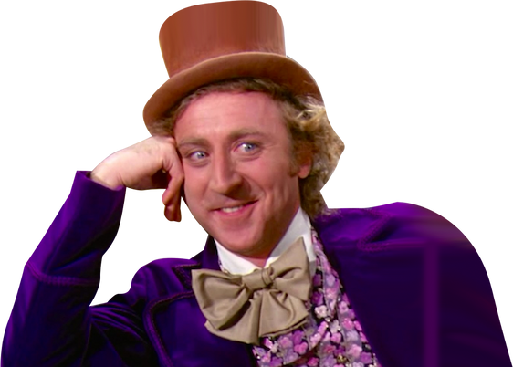
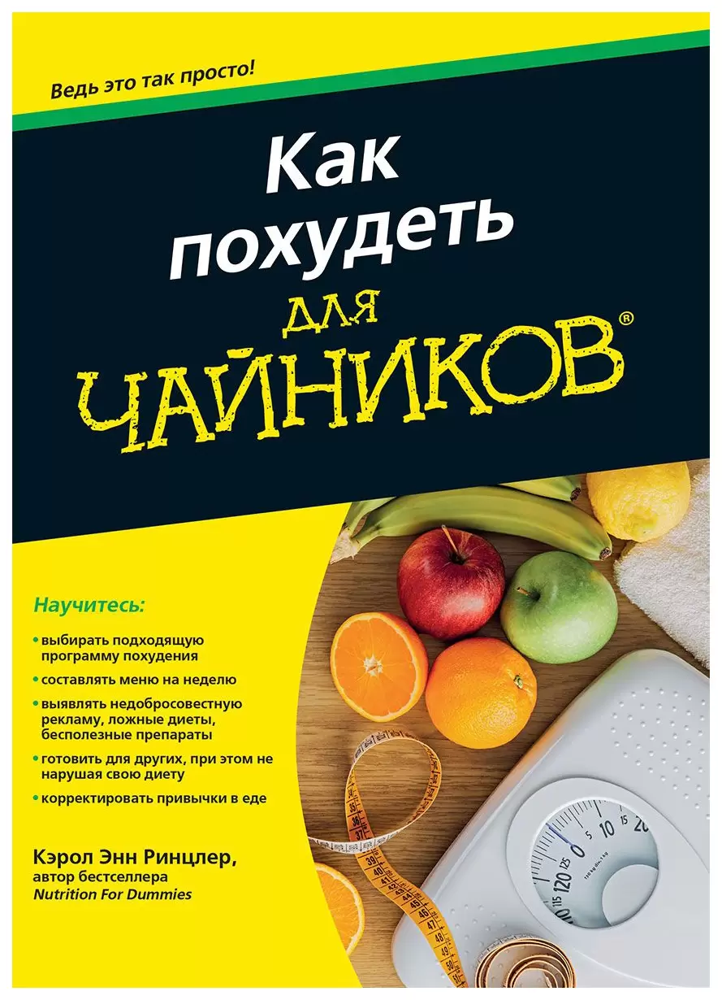

Алло, мы с нижнего этажа,
у вас стили протекают
Никита Дубко, HR Tech Яндекса
Никита
Дубко
- руководитель службы разработки
- подкастер
- FrontendConf, MinskCSS, MinskJS
- верстаю больше 15 лет

Нужно быстро сверстать страничку!
Руководитель
Мы потом обязательно переделаем нормально.
Руководитель

А ещё мы её будем печатать, показывать заказчику.
Руководитель
Перекрась ссылки в навигации, плиз.
Руководитель
.nav-link {
color: lightsteelblue;
}
.navbar-inverse .navbar-nav > li > .nav-link {
color: lightsteelblue;
}
.nav-link {
color: lightsteelblue !important;
}
Там при печати картинки разнесло. Починишь?
Руководитель
@media print {
.card-image {
max-width: 200px;
}
}
@media print {
.card-image {
max-width: 200px !important;
}
}
.navbar-inverse .navbar-nav > li > a {
color: #9d9d9d;
}
.link { color: red; }
.nav-link { color: lightsteelblue; }
a:-webkit-any-link {
color: -webkit-link;
cursor: pointer;
text-decoration: underline;
}
⬇️ Сверху вниз
| Селектор |
Свойство |
Значение |
| .navbar-inverse .navbar-nav > li > a |
color |
#9d9d9d |
| .link |
color |
red |
| .nav-link |
color |
lightsteelblue |
| a:-webkit-any-link |
color |
-webkit-link |
| a:-webkit-any-link |
cursor |
pointer |
| a:-webkit-any-link |
text-decoration |
underline |
|
ID |
:pseudo,
.class,
[attr] |
::pseudo,
element |
Source |
| .navbar-inverse .navbar-nav > li > a |
0 |
2 |
2 |
Dev |
| .link |
0 |
1 |
0 |
Dev |
| .nav-link |
0 |
1 |
0 |
Dev |
| a:-webkit-any-link |
0 |
2 |
0 |
Browser |
⬇️ Сверху вниз
| Селектор |
Свойство |
Значение |
Вес |
| .navbar-inverse .navbar-nav > li > a |
color |
#9d9d9d |
0,2,2 |
| .link |
color |
red |
0,1,0 |
| .nav-link |
color |
lightsteelblue |
0,1,0 |
| a:-webkit-any-link |
color |
-webkit-link |
0,2,0 |
| a:-webkit-any-link |
cursor |
pointer |
0,2,0 |
| a:-webkit-any-link |
text-decoration |
underline |
0,2,0 |
⬆️ Снизу вверх
| Селектор |
Свойство |
Значение |
Вес |
| .nav-link |
color |
lightsteelblue |
0,1,0 |
| .link |
color |
red |
0,1,0 |
| .navbar-inverse .navbar-nav > li > a |
color |
#9d9d9d |
0,2,2 |
| a:-webkit-any-link |
color |
-webkit-link |
0,2,0 |
| a:-webkit-any-link |
cursor |
pointer |
0,2,0 |
| a:-webkit-any-link |
text-decoration |
underline |
0,2,0 |
🔀 Сортируем
| Селектор |
Свойство |
Значение |
Вес |
| .navbar-inverse .navbar-nav > li > a |
color |
#9d9d9d |
0,2,2 |
| .nav-link |
color |
lightsteelblue |
0,1,0 |
| .link |
color |
red |
0,1,0 |
| a:-webkit-any-link |
color |
-webkit-link |
0,2,0 |
| a:-webkit-any-link |
cursor |
pointer |
0,2,0 |
| a:-webkit-any-link |
text-decoration |
underline |
0,2,0 |
<nav class="navbar-inverse">
<ul class="navbar-nav">
<li><a href="#" class="nav-link">Link 1</a></li>
<li><a href="#" class="nav-link">Link 2</a></li>
</ul>
</nav>
| .navbar-inverse .navbar-nav > li > a ✅ |
color |
#9d9d9d |
| .nav-link ❌ |
color |
lightsteelblue |
| .link ❌ |
color |
red |
| a:-webkit-any-link ❌ |
color |
-webkit-link |
| a:-webkit-any-link ✅ |
cursor |
pointer |
| a:-webkit-any-link ✅ |
text-decoration |
underline |
Нужно учитывать
- Вес селектора.
- Правильный порядок подключения стилей.
- Каскад.
1. Избавляемся от веса

Единая специфичность (0, 1, 0)
.one {
/* ... */
}
.two {
/* ... */
}
(0, 2, 0)
.one {
/* ... */
}
.one:hover {
/* ... */
}
<nav class="b-nav">
<ul class="b-list">
<li class="b-list-item">
<a href="#" class="b-link">Ссылка</a>
</li>
</ul>
</nav>
Абсолютно
независимые
блоки
😭 Придумать уникальное имя
<nav class="nav"> <!-- ⬅ Блок -->
<ul class="nav__list"> <!-- ⬅ Элемент -->
<li class="nav__list-item">
<a href="#" class="nav__link">
Ссылка 1
</a>
</li>
<li class="nav__list-item"> <!-- Модификатор ⬇ -->
<a href="#" class="nav__link nav__link--active">
Ссылка 2
</a>
</li>
</ul>
</nav>
💡 Правила именования файлов
/* nav.css */
.nav { /* ... */ }
.nav__list { /* ... */ }
.nav__list-item { /* ... */ }
.nav__link { /* ... */ }
.nav__link--active { /* ... */ }
<nav class="nav">
<ul class="nav__list list">
<li class="list__item">
<a href="#" class="list__item-link link">
<span class="link__text">Ссылка</span>
</a>
</li>
</ul>
</nav>
Ещё одна договорённость
- Внутреннее поведение описываем в блоках.
- Внешнее поведение можно описывать только для элементов.
- Тогда
html и body — тоже блоки.
👑 Наследуемые свойства?
font-size, color?
Ещё одна договорённость
- Блок содержит все стили, которые ему нужны для работы.
- Если шрифт должен быть зафиксирован, его нужно зафиксировать.
Дизайнер
⬇
Верстальщик
⬇
Бэкенд-разработчик
✅ Плюсы БЭМ & Co
- Сущности дизайна однозначно привязаны к вёрстке.
- Решены проблемы каскада и специфичности.
- Никаких ограничений по фичам CSS.
- Блоки работают везде, где их используют.
- Большие комьюнити.
❌ Минусы БЭМ & Co
- Разработка замедляется.
- Рефакторинг сложный.
- Проблема именования классов (как переменных в JS).
- Нужно строгое соблюдение правил.
- Большой CSS-бандл.
.card {
box-sizing: border-box;
padding: var(--token-padding-s);
display: flex;
flex-direction: column;
}
.list {
display: flex;
flex-direction: column;
}
Нашёл в Поиске
display: block — 42 раза;display: inline-block — 52 раза;display: flex — 37 раз;overflow: hidden — 55 раз;white-space: nowrap — 46 раз;position: relative — 68 раз;!important — 7 раз.
🧐 Хочу текст
размером 16px
.fs-16 {
font-size: 16px;
}
🧐 Хочу стилизовать ::before и :hover
.fs-16\:\:b,
.fs-16\:h {
font-size: 16px;
}
Основные идеи
- Ограниченный набор классов.
- CSS-бандл не растёт.
- Правила именования классов.
- Стили по сути переезжают в HTML.
header__list-item link link--active
fs-16 c-red с-blue:h m-0 mb-12 p-0
// Notification.jsx
function Notification({ imageUrl, imageAlt, title, message }) {
return (
<div className="p-6 max-w-sm mx-auto rounded-xl flex items-center space-x-4">
<div className="shrink-0">
<img className="h-12 w-12" src={imageUrl.src} alt={imageAlt}>
</div>
<div>
<div className="text-xl font-medium text-black">{title}</div>
<p className="text-slate-500">{message}</p>
</div>
</div>
)
}
Reusing Styles
🤔 Но я просто хочу одинаковую кнопку
@tailwind base;
@tailwind components;
@tailwind utilities;
.btn-primary {
@apply py-2 px-4 bg-blue-500 text-white font-semibold
rounded-lg shadow-md hover:bg-blue-700
focus:outline-none focus:ring-2
focus:ring-blue-400 focus:ring-opacity-75;
}
🥴 Новый выдуманный синтаксис
🥹 Всегда новое будет появляться быстро?
Во фреймворках — не факт 🤷♂️
👍 Но можно добавить
свой класс
🥹 Хочу собрать демку для дебага на codepen
✅ Плюсы TailwindCSS
- Разработка очень быстрая.
- Маленький CSS-бандл.
- Код более-менее читаемый.
- Решает проблему изоляции стилей.
- Большое комьюнити.
- Целая экосистема.
❌ Минусы TailwindCSS
- Нужно учить придуманный синтаксис.
- Дизайн переехал в HTML.
- Не работает в браузере из коробки.
- Более сложный рефакторинг.
Давай подключим карусельку!
Заказчик
И дизайн-систему, у гугла видел хорошую!
Заказчик
😐 Внешний мир ничего вам не должен
А если я разработчик библиотеки?
🤔 Как обычно подключают библиотеку?
import styled from 'styled-components'
const Container = styled.div`
background-color: #2b2b2b;
border-radius: 5px;
`
const Title = styled.h1`
font-weight: 300;
`
export const SimpleComponent = () => (
<Container>
<Title>Styled Component</Title>
</Container>
)
{
"color": {
"primary": "#ff0000",
"secondary": "#cc6600"
},
"typography": {
"fontSize": {
"sm": "12px",
"m": "14px",
"l": "16px"
}
}
}
style="width: NaNpx; color: undefined"
class="undefined"
CSS
- загрузка CSS;
- парсинг CSS;
- применение CSS;
- отрисовка.
CSS-in-JS
- загрузка JS;
- парсинг JS;
- построение AST;
- компиляция JS;
- выполнение JS;
- вставка CSS;
- парсинг CSS;
- применение CSS;
- отрисовка.
💡 Автоматические уникальные классы
import styles from './App.css';
class App extends Component {
render() {
return (
<div className={ styles.app }>
<div className={ styles.header } />
<p className={ styles.intro }>
Hello!
</p>
</div>
);
}
}
✅ Плюсы CSS Modules
- Стили в CSS.
- Решена проблема изоляции стилей.
- Удобная интеграция с JS.
- Поддержка сообществом.
❌ Минусы CSS Modules
- Нужно суметь подключить.
- Есть
:global, который не работает в обычном CSS.
- Рефакторинг сразу в двух файлах.
Какой процесс я хочу
- Дизайнер нарисовал макет, предусмотрел в нём все состояния.
- Верстальщик собрал компоненты на любимых технологиях.
- Тесты!
- Используем компоненты в приложении.
- Тесты!
Какой процесс я хочу
- Дизайн в Figma.
- Изолированные компоненты в Storybook.
- Тесты в Playwright.
- Плагины для связи между инструментами.
- Не бороться с CSS.
😒 Нет контроля
- над наследованием;
- над каскадом;
- над изоляцией стилей.
Что изменилось?
- Мощность персональных устройств.
- Процесс внедрения спецификаций.
- Проект Interop.
- Алгоритмы парсинга CSS.
:root {
--base-text-primary: #2F3337;
}
.component {
color: var(--base-text-primary);
}
window.CSS.registerProperty({
name: "--my-color",
syntax: "<color>",
inherits: false,
initialValue: "#c0ffee",
});
@property --my-color {
syntax: "<color>";
inherits: false;
initial-value: #c0ffee;
}
@property --color-text {
syntax: "<color>";
inherits: false;
initial-value: red;
}
* {
color: var(--color-text);
}
.text {
--color-text: yellow;
}
<div class="card">
Parent Card
<p class="text">
Text of P
<span>Span inside of P</span>
</p>
</div>
@layer reset, bootstrap, utilities;
@import url('bootstrap.css') layer(bootstrap);
@layer utilities {
.sr-only { /* ... */ }
}
@layer reset {
*, *::before, *::after {
box-sizing: border-box;
}
}
p { font-size: 18px; }
<p id="id" class="class">Text</p>
@layer first, second;
@layer second {
p { color: yellow; }
#id { color: red; }
}
@layer first {
.class { color: blue; }
}
p { color: green; }
⬇️ Сверху вниз
| Слой |
Селектор |
Свойство |
Вес |
| second |
p |
color: yellow |
0,0,1 |
| second |
#id |
color: red |
1,0,0 |
| first |
.class |
color: blue |
0,1,0 |
| undefined |
p |
color: green |
0,0,1 |
🔀 Сортируем слои
| Слой |
Селектор |
Свойство |
Вес |
| undefined |
p |
color: green |
0,0,1 |
| first |
.class |
color: blue |
0,1,0 |
| second |
p |
color: yellow |
0,0,1 |
| second |
#id |
color: red |
1,0,0 |
🔀 Сортируем внутри слоёв
| Слой |
Селектор |
Свойство |
Вес |
| undefined |
p |
color: green |
0,0,1 |
| first |
.class |
color: blue |
0,1,0 |
| second |
#id |
color: red |
1,0,0 |
| second |
p |
color: yellow |
0,0,1 |
⏺️ Ищем победителя
| Слой |
Селектор |
Свойство |
Вес |
| undefined |
p |
color: green |
0,0,1 |
| first |
.class |
color: blue |
0,1,0 |
| second |
#id |
color: red |
1,0,0 |
| second |
p |
color: yellow |
0,0,1 |
@layer default {
a { color: maroon; }
}
@layer theme {
a {
color: var(--brand-primary, purple);
}
.no-theme {
color: revert-layer;
}
}
@import url('bootstrap.css') layer(bootstrap);
button {
font-size: 18px;
}
@layer utilities {
@layer common, important;
@layer important { /* ... */ }
@layer common { /* ... */ }
}
@layer utilities.common {
/* ... */
}
@layer utilities {
@layer important {
/* ... */
}
}
@layer utilities.common {
/* ... */
}
<div className="card">
<style scoped>
h2 { font-weight: 300; }
</style>
<h2>Title</h2>
<img src="image.jpg" alt=""/>
</div>
<div className="card">
<style scoped>
h2 { font-weight: 300; }
</style>
<h2>Title</h2>
<img src="image.jpg" alt=""/>
</div>
<div class="red">
<div class="green">
<p>Text</p>
</div>
</div>
.green p {
color: green;
}
.red p {
color: red;
}
RED
<div class="red">
<div class="green">
<p>Text</p>
</div>
</div>
@scope(.green) {
p { color: green; }
}
@scope(.red) {
p { color: red; }
}
GREEN
@scope(.library) {
.btn {
background-color: green;
}
}
.btn {
background-color: red;
}
<div class="card">
<p>Some Text</p>
<div class="content">
<h3>Title</h3>
<p>Content</p>
</div>
</div>
@scope (.card) to (.content) {
p {
color: var(--color-card);
}
}
<div className="card">
<style scoped>
h2 { font-weight: 300; }
</style>
<h2>Title</h2>
<img src="image.jpg" alt=""/>
</div>
<div className="card">
<style>
@scope {
h2 { font-weight: 300; }
}
</style>
<h2>Title</h2>
<img src="image.jpg" alt=""/>
</div>
🥹 И это тоже везде работает?
Контроль
- ✅ над наследованием;
- ✅ над каскадом;
- ⏳ над изоляцией стилей.